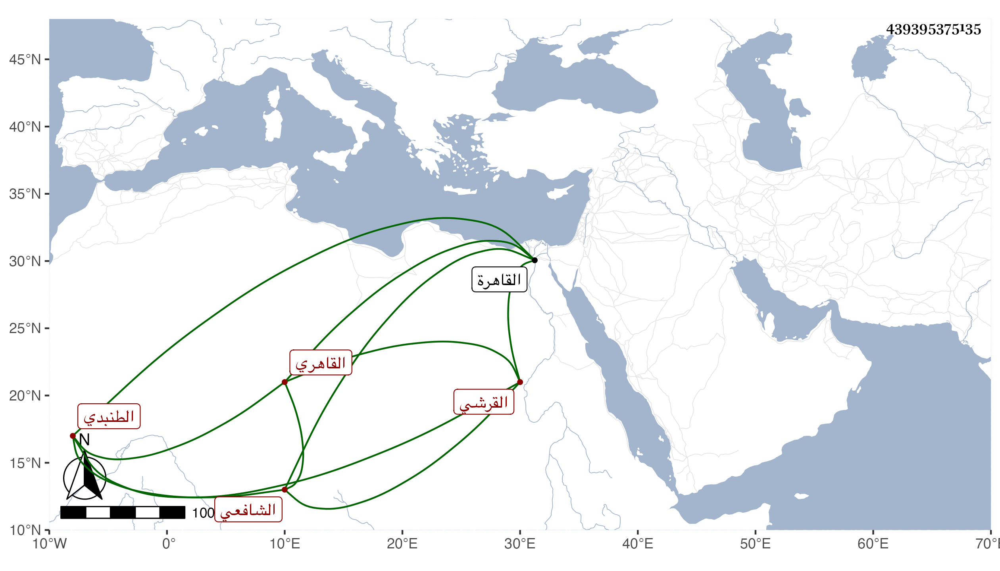

0902Sakhawi.DawLamic.ITO20230111-ara1.EIS1600.439395375135
Biography ID: 439395375135
302
أبو الحسن بن عرب هو النور علي بن الشرف محمد بن البدر محمد بن النور علي بن عمر بن علي بن أحمد القرشي الطنبدي الأصل القاهري الشافعي الماضي أبوه ويعرف كسلفه بابن عرب . ولد سنة تسع عشرة وثمانمائة بالقاهرة ونشأ بها فحفظ القرآن والعمدة والشاطبية والتنبيه وألفية النحو وعرض على جماعة كالبساطي وابن الديري وشيخنا وابن المجدي ولازمه في الفقه والفرائض والحساب وكذا أخذ عن القاياتي في الفقه في آخرين وسمع على الزين الزركشي وآخرين كالرشيدي والأربعين في ختم البخاري بالظاهرية وشيخنا وناب عنه في البهنسا وعملها ثم أعرض عنها لعمه أبي الحسن وتكسب بالشهادة بل ناب في القضاء عن العلم البلقيني في سنة أربع وستين فمن بعده وكان يجلس بحانوت الرسامين وكذا ناب بأخرة في الخطابة بالأزهر وبجامع القلعة وبالمؤيدية وحج وتنزل في صوفية الأشرفية برسباي وغيرها من الجهات وكتب بخطه الكثير ومما كتبه القول البديع وترجمة النووي كلاهما من تصانيفي وأخذ عني وعن الديمي . مات في صفر سنة ثمان وتسعين رحمه الله .
